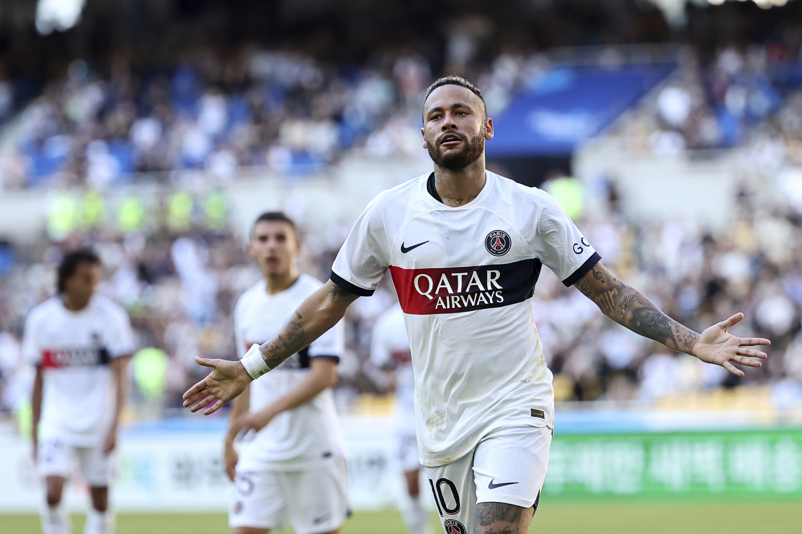

footballer who plays as a forward for Saudi Pro League club Al Hilal and the Brazil national team. A prolific goalscorer and playmaker renowned for his dribbling skills, he is widely regarded as one of the best players in the world and the best Brazilian player of his generation. Neymar has scored at least 100 goals for three different clubs, making him one of the few players to achieve this feat. Neymar da Silva Santos Júnior (born 5 February 1992), known as Neymar Júnior or mononymously as Neymar, is a Brazilian professional
Neymar came into prominence at Santos, where he made his professional debut aged 17. Soon becoming the Brazilian league's star player, he won the 2011 Copa Libertadores with Santos, being their first since 1963. He was named the South American Footballer of the Year in 2011 and 2012, and relocated to Europe to join Barcelona in 2013. In his second season, as part of Barcelona's attacking trio with Lionel Messi and Luis Suárez, dubbed MSN, he won the continental treble of La Liga, the Copa del Rey, and the UEFA Champions League. Motivated to be the focal player at club level, Neymar unexpectedly left Barcelona for Paris Saint-Germain (PSG) in 2017[4] in a €222 million transfer, which made him the most expensive player ever.[note 1] Despite becoming injury prone in Paris, he was voted Ligue 1 Player of the Year in his debut season, helped PSG attain an historic domestic quadruple and reach its first ever Champions League final in the 2019–20 season, and became the highest scoring Brazilian player in Champions League history.[7] In 2023, after six seasons in Paris, Neymar signed for Al Hilal in a lucrative deal.
Debuting for Brazil aged 18, Neymar is the all-time top goalscorer for his national team with 79 goals in 128 matches. He won the 2013 FIFA Confederations Cup, winning the Golden Ball. His participation in the 2014 FIFA World Cup and 2015 Copa América was cut short by injury and a suspension, respectively, before captaining Brazil to their first Olympic gold medal in men's football at the 2016 Summer Olympics, having already achieving a silver medal at the 2012 edition. Having renounced the captaincy, he featured at the 2018 World Cup, and after missing the 2019 Copa América through injury, helped Brazil to a runner-up finish at the 2021 tournament. He has won a recbord six Samba Gold awards, given to the best Brazilian player in Europe.
Neymar finished third for the FIFA Ballon d'Or in 2015 and 2017, has been awarded the FIFA Puskás Award, has been named in the FIFA FIFPro World11 twice, and the UEFA Champions League Squad of the Season three times. Off the pitch, he ranks among the world's most prominent sportsmen. SportsPro named him the most marketable athlete in the world in 2012 and 2013, and ESPN cited him as the world's fourth-most-famous athlete in 2016. In 2017, Time included him in its annual list of the 100 most influential people in the world.[8] In 2018, France Football ranked Neymar the world's third-highest-paid footballer. The following year, Forbes ranked him the world's third-highest-paid athlete,[9] dropping a spot to fourth in 2020.
Early life
Neymar da Silva Santos Júnior was born in Mogi das Cruzes, São Paulo, to Neymar Santos Sr. and Nadine da Silva and had a Christian upbringing.[11][12] He inherited his name from his father, who is a former footballer and became his son's advisor as Neymar's talents began to grow.[13] Neymar comments on his father's role: "My father has been by my side since I was little. He takes care of things, my finances and my family."[14] Growing up, Neymar combined his love of futsal with street football.[15] Neymar said that futsal had a massive influence on him growing up, helping him develop his technique, speed of thought and ability to perform moves in tight spaces.[16]
In 2003, Neymar moved with his family to São Vicente, where he began playing for youth side Portuguesa Santista.[17] Then, later in 2003, they moved to Santos, where Neymar joined Santos.[18] With the success of his youth career and added income, the family bought their first property, a house next to Vila Belmiro, Santos' home stadium. Their quality of family life improved, as at age 15, Neymar was earning 10,000 reais per month and at 16, 125,000 reais per month. At 17, he signed his first full professional contract, was upgraded to the Santos first team, and began signing his first sponsorship deals.